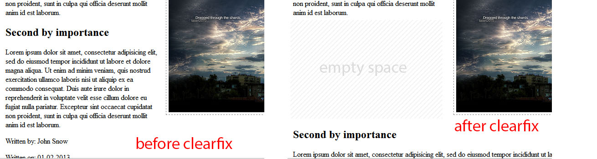
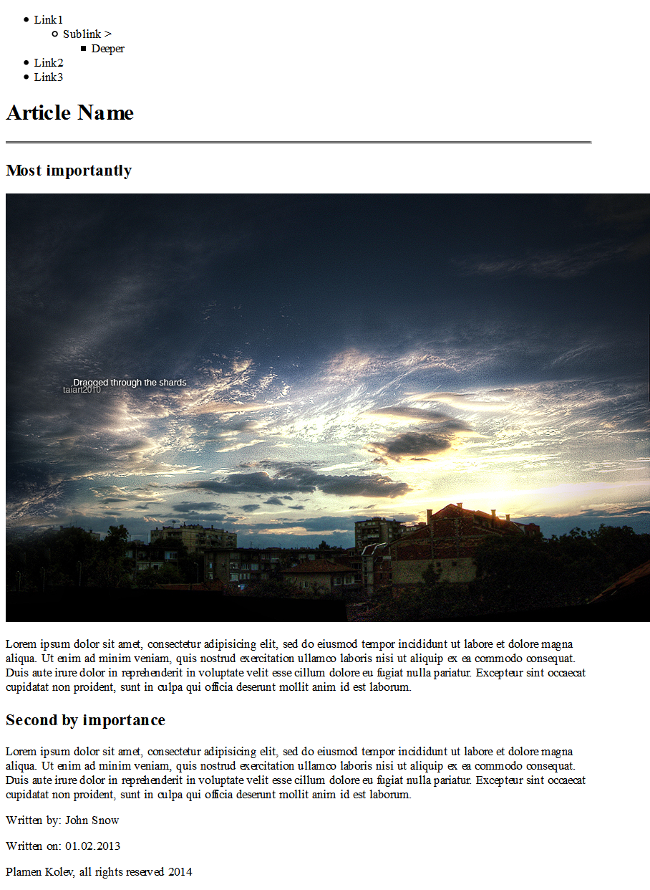
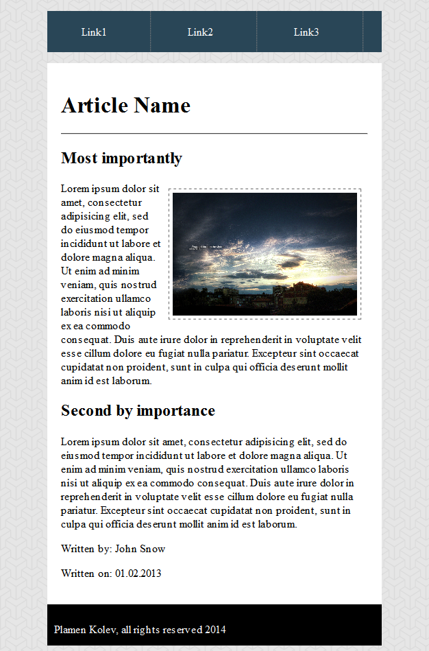

This is part two of building a website article, please visit part 1 if you haven't yet.
Css uses different targets to mark elements in the html and to change their behaviour.
For example we can change the size, color, background, visibility, display properties and much more with css.
If we want to change all h1 elements we put h1{ and in here we write the new property of all h1 tags }.
In the previous tutorial we had a div with class of article, if we want to change a single div that is an article we will do it like this:
div.article{ changes go here } - this command finds all divs that have a class of article.
A class attribute is added to an element if the feature the class is changing is going to be repeated.
For example a footer that will be used in a numerous pages, a link property that will be common across the whole page and so on. Also keep in mind that to target the styling of id, we use # and to target class we use a dot (.).
Other than class, html supports an attribute called an id, it is used for unique occourances, such as a styling change that deviates from a norm or disambiguation attribute, we will see the distinction in the the few examples that are to follow.
Here are some resources that will be required: background image can be found here.
Now make a folder inside first web folder and name it "images" and put inside the file inside the archive in the newly created folder.
Now we change the background look with the image we just used. Open the css and write this code.
body{
background-image: url("images/escheresque.png");
}
This will take the body tag and put background image everywhere and all the elements inside it(children) will inherit it.
.container{
margin:auto;
width:80%;
}
Keep in mind that the .container div has almost everything inside, so it will affect everything.
<ul>
<li id="dropdown1">Link1
<ul id="submenu">
<li id="dropdown2">Sublink >
<ul id="sub-sub">
<li>Deeper</li>
</ul>
</li>
</ul>
</li>
<li>Link2</li>
<li>Link3</li>
</ul>
.menu > ul{
padding:0px;
background-color:#294657;
width:100%;
color:white;
cursor: pointer;
}
ul li{
padding-top:20px;
display: inline-block;
height:40px;
width:100px;
border-right:1px dotted gray;
padding-left:50px;
}
#submenu{
display: none;
}
#submenu > li{
background-color:#476c82;
position: absolute;
height:20px;
padding:10px;
color:white;
}
#dropdown1:hover #submenu{
display: block;
margin-left:-90px;
margin-top:20px;
}
#sub-sub{
display: none;
}
#dropdown2:hover #sub-sub{
display: block;
}
#sub-sub > li{
background-color:#7398ad;
margin-top:-30px;
margin-left:70px;
position: absolute;
height:20px;
padding:10px;
color:white;
}
#dropdown1:hover #submenu{
display: block;
margin-left:-90px;
margin-top:20px;
}
It is read as such: when you hover the element that holds the id of dropdown1, make the submenu id and everything inside visible again, and also position it approparietly. The margins set how much pixels an element will be placed from top,left,right,bottom.
img{
width:60%;
float:right;
border:1px dashed gray;
padding:5px;
margin:10px;
}
Float:right might seem odd, but what it does is forces the image to go to the right and makes the text flow into the available space after the move.
<-- In the HTML
.clearfix{ <--- In the css
clear:both;
float:none;
display: block
}
Now everytime we insert span with class of clearfix behind an element, the element will not be afected by the floating.

And finally, the footer, we will make the .footer container black, add some padding and change the color of the text
.footer{
height:40px;
background-color:black;
color:white;
padding:10px;
}
Before and after CSS, the left is the result of the 1st tutorial and second image is the final version.
Live view here

